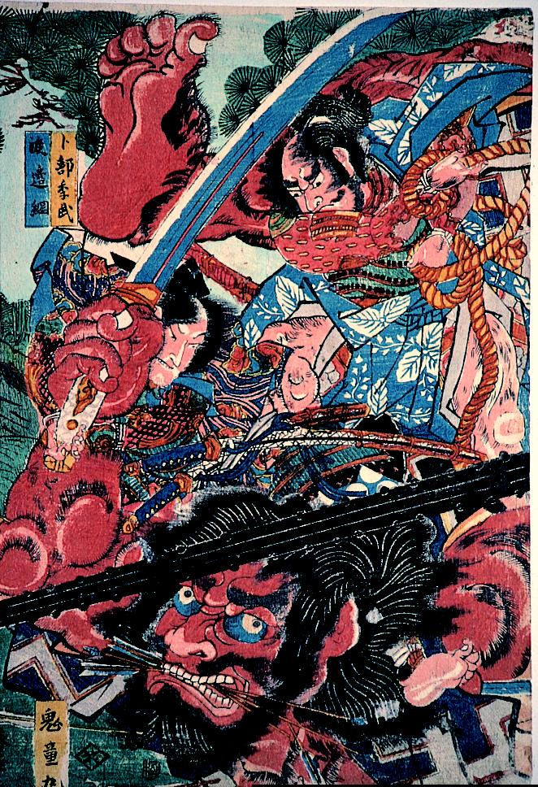

鬼；オニ

渡辺綱ら源頼光の従者たちに成敗される鬼童丸。その身体は巨大で赤い。太刀を持ち、口には数本の矢をくわえている。
著作者：勝川春幸／出典：親書誌：A5_hermitage_0003：（頼光四天王；ライコウシテンノウ）／日付：2011／資源識別子：A5_hermitage_0003_0001_0000
Copyright (c)2010- International Research Center for Japanese Studies, Kyoto, Japan. All rights reserved.